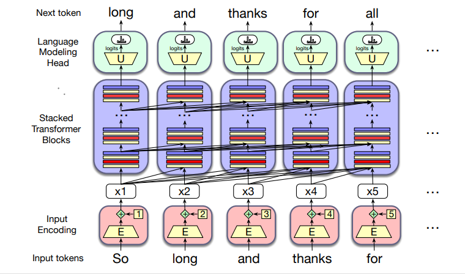
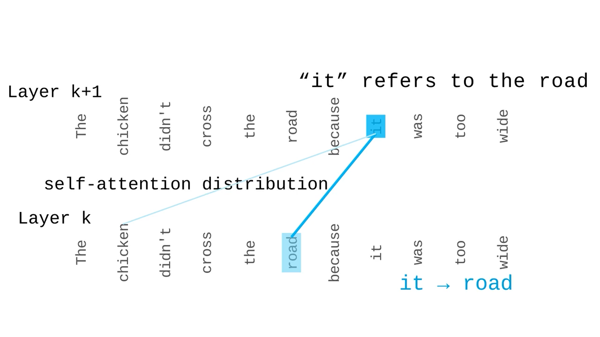
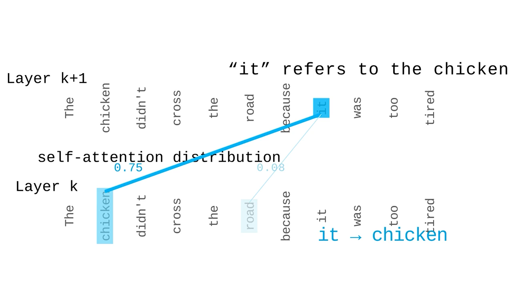
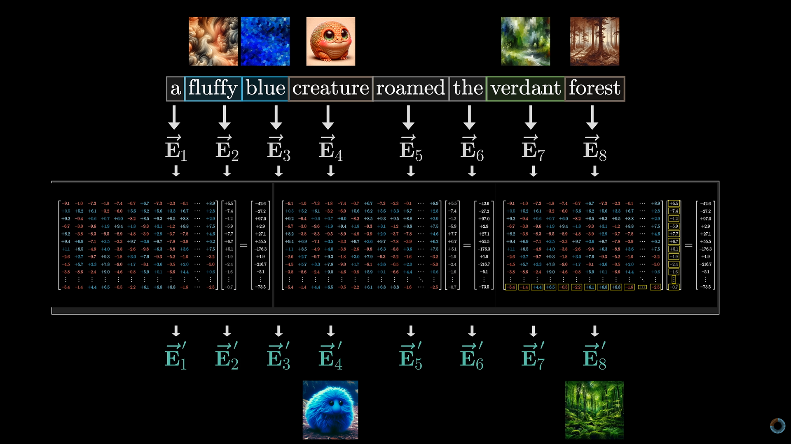
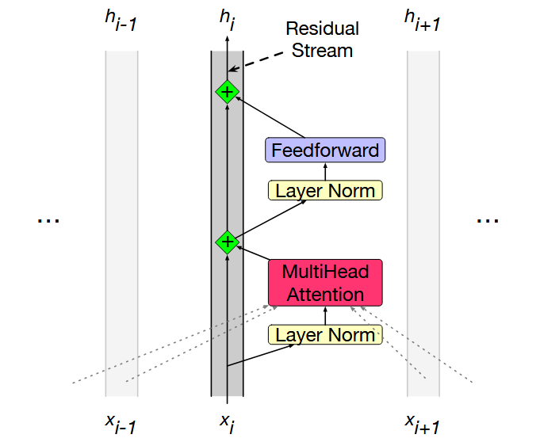
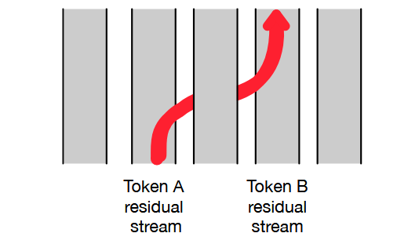
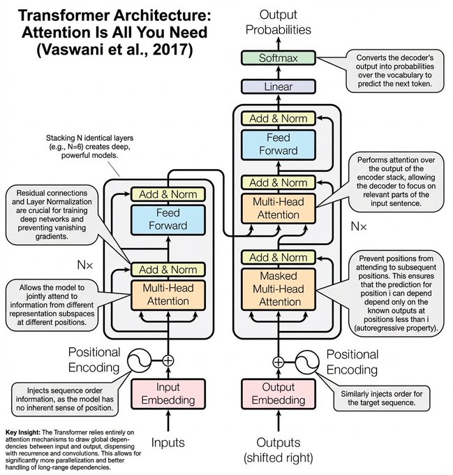
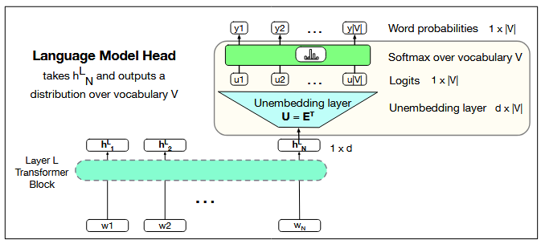
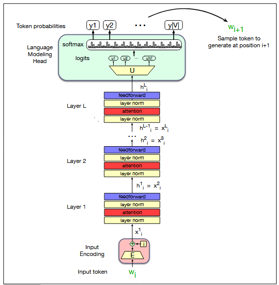

A Transformer is a neural-network architecture that uses self-attention to let every token dynamically gather relevant information from other tokens in a sequence, updating vector representations layer by layer.
The figure below shows the main components involved in transforming an input sequence into contextualized representations. These contextualized representations can then be used for a particular task, such as predicting the next token in a language model, classifying a sequence, or generating another sequence.

At a high level, a Transformer can be understood through three main stages:
The input representations are passed through one or more Transformer blocks. These blocks are the core of the Transformer and progressively build context-aware representations.
If the input sequence is represented by X = (x1, x2, ..., xn), the Transformer blocks progressively transform these vectors into contextualized representations H = (h1, h2, ..., hn).
The final contextualized representations can be used for different tasks depending on the type of Transformer model.
A Transformer processes a sequence by first representing its tokens as vectors, incorporating positional information, and then repeatedly transforming these representations through Transformer blocks. The central mechanism is self-attention, which allows each token to gather relevant information from other tokens in the sequence. The resulting contextualized representations can then be used for language modeling or other sequence-processing tasks.
Consider the sentence:
The chicken didn't cross the road because it was too wide.
Before self-attention can operate on the sentence, each token must be represented as a numerical vector. These vectors are called token embeddings.
For simplicity, suppose the model dimension is d = 4. Each token is therefore represented by four numerical values.
| Token | Embedding |
|---|---|
| The | [0.2, 0.1, 0.4, 0.3] |
| chicken | [0.8, 0.6, 0.2, 0.7] |
| didn't | [0.5, 0.9, 0.3, 0.6] |
| cross | [0.4, 0.7, 0.1, 0.8] |
| the | [0.3, 0.2, 0.6, 0.5] |
| road | [0.9, 0.4, 0.3, 0.6] |
| because | [0.2, 0.8, 0.5, 0.3] |
| it | [0.6, 0.3, 0.8, 0.4] |
| was | [0.4, 0.5, 0.7, 0.2] |
| too | [0.7, 0.2, 0.4, 0.9] |
| wide | [0.8, 0.5, 0.6, 0.3] |
If there are N tokens and each token is represented using d numbers, all token embeddings can be arranged into a single matrix:
If there are N tokens, we can put all vectors into one matrix:
For this sentence, there are 11 tokens and we have assumed d = 4. Therefore:
The token embeddings tell the model what tokens are present, but they do not by themselves tell the model where those tokens occur in the sequence.
For example, consider:
The chicken crossed the road.
and:
The road crossed the chicken.
The same words are present, but their order is different and therefore their meaning is different.
Therefore, positional information is incorporated into the token representations so that the Transformer can distinguish between different token orders.
Conceptually:
Different Transformer implementations use different mechanisms for representing position. The important idea is that the model needs information about where each token occurs in the sequence.
Self-attention is a mechanism that allows each token in a sequence to examine the other tokens in the same sequence and determine how much information to gather from each of them when constructing its updated representation.
In other words, instead of representing each token independently, self-attention allows the representation of a token to depend on the other tokens that provide useful context.
For each token, self-attention asks:
"Which other tokens are relevant to understanding this token, and how much information should I take from them?"
The model answers this question mathematically by assigning an attention weight to each token. A larger weight means that the corresponding token contributes more information to the updated representation.
Let us first understand the problem it is designed to solve.
In older models such as Word2Vec, each word has one fixed vector. Its representation does not change with the sentence.
But in real language, a word's meaning depends on its context.
Consider the following two sentences:
The chicken didn't cross the road because it was too wide.
The chicken didn't cross the road because it was too tired.
In both sentences, the word "it" is the same token. However, its interpretation depends on the surrounding words.
This illustrates an important property of language: the meaning of a token can depend on the other tokens around it.
A token's initial embedding does not by itself describe how that token should be interpreted in every possible sentence. The Transformer therefore needs a mechanism that allows the representation of one token to incorporate useful information from other tokens.
Self-attention provides this mechanism.
When processing a token, self-attention allows the model to examine other tokens in the sequence and determine how relevant they are to the current token.
For each token, we can think of self-attention as asking:
"Which other tokens contain information that is useful for understanding this token in the current context?"
Attention provides a mathematical way to determine how much information to gather from each token by assigning an attention weight to each token: tokens considered more relevant receive larger weights, while less relevant tokens receive smaller weights.
The chicken didn't cross the road because it was too wide. → it = road

The chicken didn't cross the road because it was too tired. → it = chicken

The information from these tokens is then combined to produce an updated representation of the current token. This updated representation is context-aware because it incorporates information from other tokens in the sequence.

We have an embedding for every word in the sentence. The goal of self-attention is to make each embedding context-aware by allowing it to gather useful information from other words.
Suppose the input vector for the word "it" is:
\[ x_{it} = [0.6,\;0.3,\;0.8,\;0.4] \]
The Transformer transforms this input vector into three different vectors:
\[q_{it} = x_{it} W_Q\]
\[k_{it} = x_{it} W_K\]
\[v_{it} = x_{it} W_V\]
The matrices WQ, WK, and WV are learned during training. The same learned projection matrices are applied to every token position.
Consider the word “it”:
The chicken didn’t cross the road because it was too wide.
When processing “it”, the model needs to determine which other words can help explain what “it” refers to.
| Vector | Role | Example when processing “it” |
|---|---|---|
| qit(Query) | What information am I looking for? | “I need information that helps identify what it refers to.” |
| kroad (Key) | What kind of information do I contain? | road: “I represent something that can be wide.” |
| vroad (Value) | What information should I actually provide? | Information about road that can be passed to it. |
Now consider the second sentence:
The chicken didn’t cross the road because it was too tired.
| Vector | Role | Example |
|---|---|---|
| qit (Query) | What am I looking for? | “Who or what does it refer to?” |
| kchicken (Key) | What do I contain? | chicken: “I represent an animal that can be tired.” |
| vchicken (Value) | What information do I provide? | Information about chicken that helps interpret it. |
Therefore, instead of transforming one token at a time, the Transformer can perform these operations for the entire sequence simultaneously using matrix multiplication:
\[ Q = XW_Q \]
\[ K = XW_K \]
\[ V = XW_V \]
Here, X contains the input vectors of all tokens \[ X = \begin{bmatrix} x_1 \\ x_2 \\ \vdots \\ x_N \end{bmatrix} \] while Q, K, and V contain the corresponding Query, Key, and Value vectors for all tokens.
Think of Query, Key, and Value as three different roles created from the same input vector.
Q and K determine which tokens are relevant. V carries the information that is actually used.
Q + K → determine relevance
V → provides the information
Before calculating attention scores or determining token similarity, we first transform each input embedding into three different representations: Query (Q), Key (K), and Value (V). Each representation is obtained by applying its corresponding learned weight matrix to the token's input embedding.
Each output component is obtained by multiplying the embedding with one column of the selected weight matrix and adding the results.
Notice something? Q, K, and V are all computed using the same basic operation: matrix multiplication.
\[ Q = XW_Q \qquad|\qquad K = XW_K \qquad|\qquad V = XW_V \]
The operation itself does not change. What changes are the learned weight matrices WQ, WK, and WV.
During training, backpropagation adjusts these weight matrices so that Q and K learn useful relationships for determining which tokens should attend to each other, while V learns how to represent the information that is actually passed through the attention mechanism.
Now we find how strongly one token should attend to every other token. For a selected query token, we compare its Query (Q) with the Key (K) of every token in the sentence.
The similarity between a Query and a Key is measured using the dot product. If the Query and Key point in similar directions, the score is higher, indicating a stronger relationship.
The scaled dot-product attention score is:
\[ \text{score}(Q,K) = \frac{Q \cdot K}{\sqrt{d_k}} \]
In our example, each Q and K vector has four components, so dk = 4 and:
\[ \sqrt{d_k}=\sqrt{4}=2 \]
We divide by \(\sqrt{d_k}\) to keep the dot-product values from becoming too large as the dimensionality increases, which helps make training more stable.
Query token (attending from):
The similarity is measured using the dot product. If Q and K point in similar directions, they produce a higher score. A higher score means that the two vectors are more closely aligned, so that token is considered more relevant to the selected token.
The attention scores calculated in the previous step can be positive, negative, or have different magnitudes. We use softmax to convert these raw scores into normalized attention weights.
These attention weights are between 0 and 1, and all the weights together sum to 1 (100%).
This answers the question:
The softmax function is:
\[ \text{attention weight}_i = \operatorname{softmax}(s_i) = \frac{e^{s_i}} {\displaystyle\sum_{j=1}^{N}e^{s_j}} \]
Here, \(s_i\) is the raw attention score for a token. The denominator contains the exponentials of the scores of all tokens.
Query token:
Softmax converts the raw attention scores into weights that tell the model how much attention to give to each token.
A larger raw score produces a larger attention weight, while a smaller score produces a smaller weight.
All attention weights together add up to 100%.
Finally, we use the attention weights calculated in the previous step to compute a weighted sum of the Value vectors.
Each Value vector is multiplied by its corresponding attention weight, and all the resulting vectors are added together.
\[ \text{Output} = \sum_{i=1}^{N} \left( \text{attention weight}_i \times V_i \right) \]
This produces a new contextualized representation for the query token. It contains information gathered from the tokens in the sequence according to their attention weights.
Select a query token below to see how its contextualized representation is calculated.
The attention weights from the previous step determine how much information "it" receives from each token.
The Value vectors are obtained using:
\[ V = XW_V \]
Using our learned \(W_V\) matrix, the Value vectors are:
| Token | Value Vector \(V_i\) | Attention Weight |
|---|---|---|
| The | [0.27, 0.23, 0.31, 0.35] | 6.9% |
| chicken | [0.58, 0.75, 0.53, 0.85] | 10.7% |
| didn't | [0.50, 0.85, 0.54, 0.89] | 9.4% |
| cross | [0.42, 0.75, 0.39, 0.90] | 8.9% |
| the | [0.42, 0.39, 0.48, 0.58] | 7.8% |
| road | [0.61, 0.63, 0.56, 0.73] | 10.9% |
| because | [0.37, 0.66, 0.50, 0.65] | 7.6% |
| it | [0.59, 0.50, 0.68, 0.62] | 9.2% |
| was | [0.46, 0.51, 0.59, 0.52] | 8.1% |
| too | [0.60, 0.57, 0.54, 0.86] | 10.2% |
| wide | [0.61, 0.61, 0.67, 0.61] | 10.2% |
Therefore:
Output = Σ (attention weighti × Vi)
\[ \begin{aligned} \text{Output} ={}& 6.9\%[0.27,0.23,0.31,0.35]\\ &+10.7\%[0.58,0.75,0.53,0.85]\\ &+9.4\%[0.50,0.85,0.54,0.89]\\ &+8.9\%[0.42,0.75,0.39,0.90]\\ &+7.8\%[0.42,0.39,0.48,0.58]\\ &+10.9\%[0.61,0.63,0.56,0.73]\\ &+7.6\%[0.37,0.66,0.50,0.65]\\ &+9.2\%[0.59,0.50,0.68,0.62]\\ &+8.1\%[0.46,0.51,0.59,0.52]\\ &+10.2\%[0.60,0.57,0.54,0.86]\\ &+10.2\%[0.61,0.61,0.67,0.61] \end{aligned} \]
The weighted Value vectors are added component by component.
For the first dimension:
\[ \begin{aligned} d_1={}& 0.069(0.27)+ 0.107(0.58)+ 0.094(0.50)+ 0.089(0.42)\\ &+0.078(0.42)+ 0.109(0.61)+ 0.076(0.37)+ 0.092(0.59)\\ &+0.081(0.46)+ 0.102(0.60)+ 0.102(0.61)\\ &\approx \boxed{0.5074} \end{aligned} \]
For the second dimension:
\[ \begin{aligned} d_2={}& 0.069(0.23)+ 0.107(0.75)+ 0.094(0.85)+ 0.089(0.75)\\ &+0.078(0.39)+ 0.109(0.63)+ 0.076(0.66)+ 0.092(0.50)\\ &+0.081(0.51)+ 0.102(0.57)+ 0.102(0.61)\\ &\approx \boxed{0.5997} \end{aligned} \]
For the third dimension:
\[ \begin{aligned} d_3={}& 0.069(0.31)+ 0.107(0.53)+ 0.094(0.54)+ 0.089(0.39)\\ &+0.078(0.48)+ 0.109(0.56)+ 0.076(0.50)+ 0.092(0.68)\\ &+0.081(0.59)+ 0.102(0.54)+ 0.102(0.67)\\ &\approx \boxed{0.5338} \end{aligned} \]
For the fourth dimension:
\[ \begin{aligned} d_4={}& 0.069(0.35)+ 0.107(0.85)+ 0.094(0.89)+ 0.089(0.90)\\ &+0.078(0.58)+ 0.109(0.73)+ 0.076(0.65)+ 0.092(0.62)\\ &+0.081(0.52)+ 0.102(0.86)+ 0.102(0.61)\\ &\approx \boxed{0.7022} \end{aligned} \]
\[ \boxed{ \text{Output}_{it} = [0.5074,\;0.5997,\;0.5338,\;0.7022] } \]
| Dimension | Output value |
|---|---|
| d1 | 0.5074 |
| d2 | 0.5997 |
| d3 | 0.5338 |
| d4 | 0.7022 |
The attention weights determine how much information is taken from each token, while the Value vectors contain the information being gathered.
Therefore, the output for "it" is a new contextualized representation. It is a weighted combination of the Value vectors from the sequence, rather than simply being the original embedding of "it".
Read it from left to right:
The reference attention page presents the same compact formula: softmax(QKᵀ / √d) × V.
Calculating one token at a time would be slow. Instead, all queries and keys are stored as matrices.
Then one matrix multiplication calculates all pairwise scores:
Entry (i,j) tells us how strongly token i matches token j.
For a next-token language model, a token must not use future tokens.
For example, when predicting after:
the model cannot use the future answer.
The causal mask is:
Therefore:
After softmax, the positions containing −∞ become zero attention.
A single attention mechanism may learn one type of relationship between tokens. To capture different types of relationships at the same time, a Transformer uses multiple parallel attention heads.
Each attention head has its own learned Q, K, and V projection matrices. Therefore, each head can learn to focus on different aspects of the sequence.
For example, one head may learn to focus on short-range relationships, while another may capture long-distance dependencies. Another head may learn relationships related to syntax, while another may focus more on semantic relationships.
Thus, the same input sequence is examined from several different learned perspectives simultaneously. This allows multi-head attention to produce a richer representation than a single attention mechanism.
Each head independently performs scaled dot-product attention:
\[ \text{head}_i = \operatorname{softmax} \left( \frac{Q_iK_i^T}{\sqrt{d_k}} + M \right)V_i \]
Here, \(Q_i\), \(K_i\), and \(V_i\) are the Query, Key, and Value projections learned specifically for head \(i\). The mask \(M\) can be used to restrict attention when required, such as preventing a language model from looking at future tokens.
After all attention heads independently process the sequence, their outputs are concatenated:
\[ \operatorname{Concat} (\text{head}_1,\text{head}_2,\ldots,\text{head}_A) \]
Concatenation brings together the information learned by all the heads. An output projection matrix \(W_O\) then combines this information and maps it back to the Transformer's model dimension:
\[ \operatorname{MultiHeadAttention}(X) = \operatorname{Concat} (\text{head}_1,\ldots,\text{head}_A)W_O \]
Multiple heads → different learned perspectives → richer representation.
Each head can learn different relationships among the tokens, and the final projection combines these complementary pieces of information into a single representation.
A Transformer block is a modular unit that is repeatedly stacked in a Transformer model. It mainly performs two operations:
Residual connections and layer normalization support these operations by helping preserve information and stabilize training.
Think of the residual stream as a path carrying each token's vector through the Transformer.
At each stage, the Transformer computes new information using attention or the feed-forward network and adds it to the existing vector.
This allows information to accumulate as the token passes through the layers instead of replacing the information from earlier layers.

In simple terms:
New representation = Old representation + New information
Residual connections help information and gradients flow through deep networks, allowing earlier information to remain available while each layer progressively refines the representation.
A Feedforward Network (FFN) is applied independently to each token. It does not exchange information between different token positions; self-attention performs that role.
The same FFN weights are used for every token position within a Transformer layer, but each Transformer layer has its own FFN weights.
For a token representation xi, the FFN can be written as:
\[ \mathrm{FFN}(x_i) = \mathrm{GELU}(x_iW_1+b_1)W_2+b_2 \]
The original Transformer used ReLU, while many modern Transformers use GELU or other activation functions.
The FFN acts like a per-token processor. After self-attention has gathered information from other tokens, the FFN transforms and refines each token's representation using learned nonlinear transformations.
During training, the FFN's weights are adjusted through backpropagation and the training loss. In an LLM, these learned transformations help produce representations that are useful for the model's training objective, such as next-token prediction.
Self-attention: gathers information from other tokens.
FFN: processes and refines the information for each token.
Layer Normalization (LayerNorm) normalizes the features of each token vector. It helps keep the values in a stable range during training.
For a token vector x = [1, 2, 3, 4], LayerNorm works as follows:
LayerNorm then uses two learnable parameters:
The final LayerNorm operation is:
\[ \mathrm{LayerNorm}(x) = \gamma \odot \hat{x} + \beta \]
The normalization keeps the features well-scaled, while the learnable γ and β allow the network to adjust the scale and shift when needed.
LayerNorm normalizes the features of each token independently. It does not normalize across different tokens.
This is different from Batch Normalization, which normalizes using statistics across a batch.
The following equations describe a Pre-LN Transformer block. For the input sequence X = [x1, x2, ..., xN], each token is processed through the following steps:
First, the representation of each token is normalized:
\[ t_{1,i} = \mathrm{LayerNorm}(x_i) \]
The normalized representation of token i is used as a query, while the normalized representations of all tokens are available to the attention mechanism:
\[ t_{2,i} = \mathrm{MultiHeadAttention} \left( t_{1,i}, [t_{1,1},t_{1,2},\ldots,t_{1,N}] \right) \]
This is the step where information is mixed across tokens. Each token can attend to other tokens in the sequence.
The attention output is added to the original token representation:
\[ t_{3,i} = x_i + t_{2,i} \]
This residual connection helps preserve information from the earlier representation.
The result is normalized again before entering the feedforward network:
\[ t_{4,i} = \mathrm{LayerNorm}(t_{3,i}) \]
The FFN transforms the representation of token i independently:
\[ t_{5,i} = \mathrm{FFN}(t_{4,i}) \]
Unlike attention, the FFN does not mix information between different token positions.
Finally, the FFN output is added to the representation from the first residual connection:
\[ h_i = t_{3,i} + t_{5,i} \]
Attention is the part of the Transformer that mixes information across different token positions. It reads information from other tokens and adds the result to the current token through the residual connection.
\[ t_{3,i} = x_i + t_{2,i} \]

From the residual-stream perspective, attention heads can be viewed as moving useful information from one token's residual stream to another. Thus, the representation of a token can contain information originating from other tokens.

Transformer models are created by stacking many Transformer blocks. Because each block has the same input and output dimension d, the output of one block can be directly passed as the input to the next block.
Typical layer counts include:
| Model | Typical Layers |
|---|---|
| T5 / GPT-3 small | ~12 |
| GPT-3 large | ~96 |
| Modern LLMs | 100s or more |
At shallow layers, the residual stream mainly represents information about the current token. As information passes through deeper layers, the representation can encode increasingly useful contextual information for the model's training objective, such as next-token prediction.
After the final Transformer block, the last hidden vector can be mapped to vocabulary scores called logits.
Then softmax converts logits into probabilities:
For example:
| Token | Probability |
|---|---|
| the | 0.10 |
| cat | 0.05 |
| mat | 0.15 |
| sat | 0.70 |
The model can then select or sample the next token and continue generation.
If you remember only one sequence, remember this:
For the attention part alone:
| Step | Operation | Meaning |
|---|---|---|
| 1 | xWQ, xWK, xWV | Create Query, Key, Value |
| 2 | QKT | Measure token-to-token similarity |
| 3 | /√dk | Scale scores |
| 4 | + M | Block future tokens when needed |
| 5 | softmax | Convert scores to attention weights |
| 6 | weights × V | Collect information from values |
| 7 | Concat + WO | Combine attention heads |
| 8 | + residual | Preserve previous information |
| 9 | FFN | Transform each token independently |
| 10 | LayerNorm + residual | Stabilize and pass the representation onward |
Each Transformer block performs the following steps:
By stacking many Transformer blocks, the model builds increasingly rich representations and forms the deep Transformer architectures used in NLP, vision, and other applications.
A Transformer takes input tokens and passes them through multiple Transformer blocks. These blocks produce a contextualized hidden representation for each token.
To turn this representation into a prediction, we use a Language Modeling Head. It converts the final hidden representation into probabilities for all tokens in the vocabulary.
In simple terms:
Hidden representation → Logits → Probabilities → Predicted token

Figure: The language modeling head maps the final hidden representation into a probability distribution over the vocabulary.
A language model learns to predict the next token from the tokens that came before it.
For example, given:
Thanks for all the
the model estimates probabilities for possible next tokens such as help, support, time, information, and so on.
The Transformer uses attention to build a representation that contains information from the available context.
Suppose the final Transformer layer produces the hidden state hLN for the last token at position N.
Let the hidden-state dimension be d and the vocabulary size be |V|.
The final Transformer block produces:
\[ h_L^N \in \mathbb{R}^{d} \]
This vector contains the information the Transformer has gathered from the context.
The language modeling head projects the hidden state into vocabulary space:
\[ u = h_L^N W^T + b \]
Here:
Therefore:
\[ u \in \mathbb{R}^{|V|} \]
The logits are converted into probabilities using softmax:
\[ y = \mathrm{softmax}(u) \]
Now every vocabulary token has a probability, and all probabilities together sum to 1.
The token with a high probability is a strong candidate for the next token.
The input embedding matrix can also be used to map hidden representations back into vocabulary space. This is called weight tying.
If the embedding matrix is:
\[ E \in \mathbb{R}^{|V| \times d} \]
its transpose can be used as the unembedding matrix:
\[ E^T \in \mathbb{R}^{d \times |V|} \]
The logits can then be computed as:
\[ u = h_L^N E^T \]
This allows the same learned token representations to be used for both input embeddings and output prediction.
The complete process can be viewed as:
\[ h_L^N \rightarrow u \rightarrow \mathrm{softmax}(u) \rightarrow \text{token probabilities} \]
For example:
The model can then choose or sample a token from this probability distribution.
During text generation, the selected token is added to the sequence. The Transformer processes the updated sequence again and produces a new probability distribution for the next token.
This process is repeated:
\[ w_i \rightarrow w_{i+1} \rightarrow w_{i+2} \rightarrow \cdots \]

Figure: A decoder-only Transformer passes the input tokens through stacked Transformer blocks and uses the language modeling head to predict the next token.
Models such as GPT use a decoder-only Transformer. They use causal self-attention, which prevents a token from looking at future tokens.
For example, when predicting the next token after:
The chicken didn't cross
the model can use the tokens before the prediction position, but not tokens that come after it.
The final hidden representation is passed to the language modeling head, which produces the probability distribution for the next token.
The language modeling head converts the Transformer's final hidden representation into a prediction over the vocabulary.